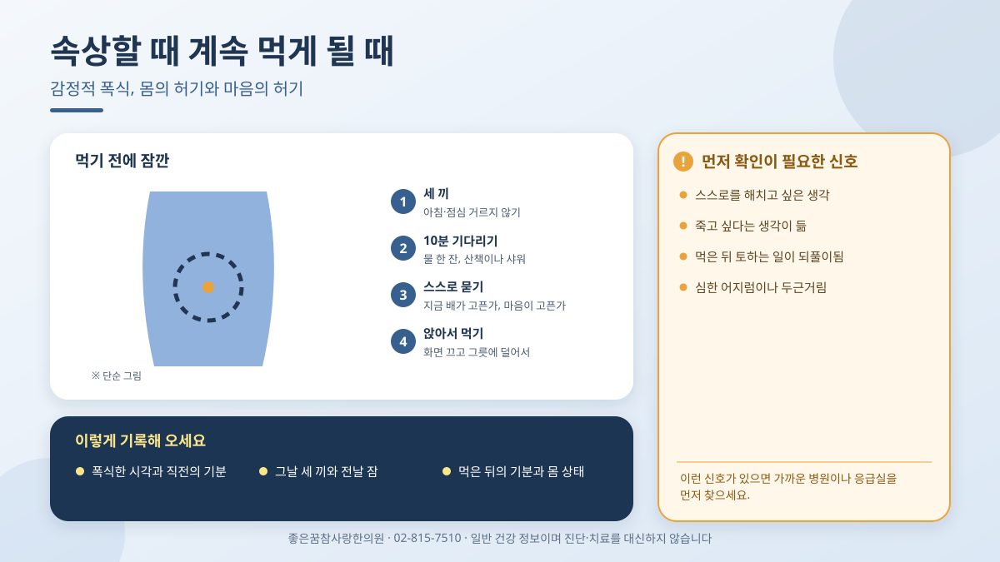

이종호 한의사 감수좋은꿈참사랑한의원 대표원장 (한의사 면허번호 19769)발행 2026-11-26 · 수정 2026-11-26
이 글의 차례
밤 열한 시, 유난히 힘들었던 하루를 마치고 집에 돌아옵니다. 저녁은 이미 먹었는데 냉장고 문을 열고, 찬장의 과자 봉지를 뜯고, 배달 앱을 켭니다. 맛을 느끼기보다 무언가를 계속 입에 넣고 있는 느낌입니다. 다 먹고 나면 배가 아플 만큼 부르고, 곧이어 '또 이랬다'는 자책이 몰려옵니다.
진료실에서 이 이야기를 꺼내시는 분들은 대개 목소리가 작아집니다. 다이어트 상담으로 오셨다가, 혹은 소화불량으로 오셨다가 조심스럽게 "사실 제가 스트레스를 받으면 먹어요"라고 말씀하십니다. 부끄러워할 일이 아니라고 먼저 말씀드립니다. 생각보다 훨씬 많은 분이 같은 고민을 안고 계십니다.
이렇게 배고픔보다 감정 때문에 먹게 되고, 그 양이 평소보다 많아지는 것을 감정적 폭식이라고 부릅니다. 먹는 행동을 억지로 참는 것보다, 먹고 싶게 만드는 마음과 몸의 상태를 먼저 들여다보는 것이 출발점입니다.
감정적 폭식은 어떤 모습으로 나타나나요?
감정적 폭식은 몇 가지 공통된 모습을 보입니다. 배고픔이 갑자기 몰려오고, 특정한 음식이 강하게 당깁니다. 주로 달고 기름지고 바삭한 음식, 빵, 과자, 라면, 아이스크림처럼 빠르게 먹을 수 있는 것들입니다.
먹는 동안에는 맛을 음미하기보다 빠르게, 거의 기계적으로 먹는 경우가 많습니다. 텔레비전이나 휴대폰을 보며 먹다가 정신을 차려 보면 봉지가 비어 있습니다. 배가 부른데도 멈추기 어렵고, 먹고 나면 배가 불편할 만큼 부릅니다.
그리고 먹은 뒤에는 대개 자책과 후회가 찾아옵니다. 그 자책이 또 다른 스트레스가 되어 다음 폭식으로 이어지는 고리가 생기기도 합니다. 남에게 들키지 않으려고 혼자 있을 때 몰래 먹게 되는 분도 많습니다.
몸의 허기와 마음의 허기는 어떻게 다른가요?
몸의 허기는 서서히 찾아옵니다. 마지막 식사 뒤 몇 시간이 지나 배에서 꼬르륵 소리가 나고, 어떤 음식이든 먹으면 채워지며, 배가 부르면 자연스럽게 멈춰집니다. 먹고 난 뒤 만족스럽고 편안합니다.
마음의 허기는 갑자기 몰려옵니다. 식사를 한 지 얼마 되지 않았는데도 찾아오고, 특정한 음식만 강하게 당기며, 배가 불러도 멈추기 어렵습니다. 그리고 먹고 난 뒤에는 만족보다 자책이 남습니다.
먹고 싶다는 느낌이 들 때 '지금 배가 고픈가, 아니면 마음이 고픈가' 하고 한 번 물어보는 것만으로도 큰 걸음입니다. 답이 마음 쪽이라면, 그 마음이 지금 무엇을 바라는지 살펴볼 차례입니다. 위로, 쉼, 지루함을 달래 줄 무언가, 혹은 그저 혼자만의 시간일 수도 있습니다.
왜 속상할 때 먹게 될까요
먹는 것은 가장 빠르고 손쉬운 위로입니다. 단 음식과 기름진 음식은 먹는 순간 기분을 잠깐 끌어올리는 물질이 나오게 해서, 몸은 '힘들 때 이것을 먹으면 편해진다'고 배웁니다. 이 경험이 되풀이되면 힘든 감정이 올 때마다 몸이 먼저 음식을 찾게 됩니다.
스트레스 자체도 식욕을 흔듭니다. 긴장이 오래 이어지면 몸은 비상 상황에 대비해 빠른 기운을 원하고, 달고 기름진 음식이 더 당기게 됩니다. 늦게까지 일하고 잠이 부족한 날 야식이 유난히 당기는 것도 같은 이유입니다.
잠이 부족하면 배고픔을 부르는 신호는 커지고 배부름을 알리는 신호는 약해집니다. 그래서 잠을 설친 다음 날에는 같은 상황에서도 폭식이 일어나기 쉽습니다. 끼니를 거르거나 너무 적게 먹는 다이어트도 몸을 굶주린 상태로 만들어 폭식의 문을 열어 둡니다.
한의학에서는 마음이 상하면 비위, 곧 소화를 맡은 기운이 함께 흔들린다고 봅니다. 걱정과 생각이 많으면 비위가 지치고, 지친 비위는 단맛을 찾게 된다는 해석입니다. 그래서 진료에서는 먹는 흐름과 함께 소화 상태와 마음의 긴장을 나란히 살핍니다.
폭식증, 야식 습관과는 어떻게 다른가요
가끔 힘든 날 평소보다 조금 더 먹는 것은 많은 사람이 겪는 일입니다. 감정적 폭식은 그런 일이 자주 되풀이되고, 먹는 양이 많으며, 스스로 멈추기 어렵다고 느낄 때를 말합니다.
일주일에 여러 번 짧은 시간에 아주 많은 양을 먹고, 멈출 수 없다는 느낌이 강하며, 먹은 뒤 일부러 토하거나 설사약을 쓰거나 굶는 일이 이어진다면 식이장애를 함께 살펴야 합니다. 이 경우에는 정신건강의학과 진료를 먼저 받아 보시길 권합니다.
야식 습관은 저녁 식사가 부실하거나 늦게 자는 생활 리듬 때문에 배가 고파 먹는 경우가 많습니다. 감정적 폭식은 배고픔과 상관없이 감정을 따라 먹는다는 점이 다릅니다. 둘이 겹치는 분도 많아서 시각과 기분을 함께 기록해 보시면 구분에 도움이 됩니다.
내 먹는 흐름을 스스로 점검해 보기
아래 항목 가운데 나에게 해당하는 것을 세어 보세요. 진단이 아니라 진료실에서 이야기를 시작할 실마리입니다.
- 속상하거나 지친 날 배가 고프지 않아도 먹게 된다
- 특정한 음식이 갑자기 강하게 당긴다
- 먹기 시작하면 배가 불러도 멈추기 어렵다
- 혼자 있을 때 몰래 먹는 경우가 많다
- 먹고 나면 자책과 후회가 크게 남는다
- 낮에 거의 안 먹다가 밤에 몰아서 먹는다
해당하는 항목이 많고 이런 흐름이 몇 달 넘게 이어졌다면, 혼자 참아 보려 애쓰기보다 상담을 받아 보시길 권합니다.
먼저 이렇게 여쭙니다
처음 오시면 저는 대략 이런 순서로 여쭙니다. 미리 생각해 오시면 이야기가 수월해집니다.
- 주로 어떤 기분일 때 먹게 되나요? 속상함, 지침, 지루함, 외로움 가운데 무엇인가요?
- 하루 중 언제 가장 많이 먹게 되나요?
- 그때 주로 찾는 음식은 무엇인가요?
- 세 끼는 어떻게 드시나요? 거르는 끼니가 있나요?
- 잠은 몇 시에 자고 몇 시에 깨시나요?
- 먹은 뒤 토하거나 굶는 일이 있나요?
이 가운데 대답하기 어려운 질문이 있다면 넘어가셔도 괜찮습니다. 체중 변화나 최근 다이어트를 해 보신 적이 있는지도 함께 여쭙습니다. 진료실에서는 먹은 양을 따지기보다, 먹게 되는 흐름을 함께 이해하는 데 마음을 둡니다.
일상에서 먼저 해 볼 수 있는 것
감정적 폭식을 줄이는 데 가장 먼저 필요한 것은 굶지 않는 것입니다. 낮에 너무 적게 먹으면 저녁에 몸과 마음이 함께 허기져 폭식의 문이 열리기 쉽습니다. 세 끼를 비슷한 시각에 챙겨 드시는 것만으로도 밤의 폭식이 줄어드는 분이 많습니다.
- 아침과 점심을 거르지 않고, 단백질 반찬 챙기기
- 먹고 싶을 때 10분만 기다리며 물 한 잔 마시기
- 먹기 전 '지금 배가 고픈가' 스스로 묻기
- 먹을 때는 화면을 끄고 그릇에 덜어 앉아서 먹기
- 과자와 빵은 집에 쌓아 두지 않고 그때그때 조금만 사기
- 잠드는 시각을 일정하게 지키기
10분 기다리기는 참으라는 뜻이 아닙니다. 10분 동안 산책을 하거나, 샤워를 하거나, 친구에게 메시지를 보내 보세요. 그래도 먹고 싶다면 먹어도 괜찮습니다. 다만 그릇에 먹을 만큼 덜어 앉아서, 천천히 맛을 느끼며 드시길 권합니다.
감정을 달래는 다른 방법을 몇 가지 목록으로 만들어 두는 것도 도움이 됩니다. 따뜻한 차 마시기, 좋아하는 음악 듣기, 짧은 산책, 일기 쓰기, 가까운 사람과 통화하기처럼요. 힘든 순간에는 생각이 잘 나지 않으니 냉장고 문에 붙여 두셔도 좋습니다.
퇴근길이나 귀갓길도 살펴보세요. 편의점이나 빵집 앞을 지나며 습관처럼 들르게 된다면, 며칠만이라도 다른 길로 돌아가 보는 것도 방법입니다. 먹고 싶은 마음이 생기는 장면 자체를 조금 줄이면 참느라 쓰는 힘도 줄어듭니다.
저녁 시간을 미리 계획해 두는 것도 도움이 됩니다. 힘든 하루를 마치고 아무 계획 없이 집에 오면 몸이 익숙한 위로인 음식부터 찾게 됩니다. 샤워, 산책, 드라마 한 편처럼 저녁에 할 작은 일을 정해 두세요.
먹은 뒤의 자책을 다루는 법
폭식을 한 뒤 자신을 심하게 탓하면, 그 괴로움이 또 다른 폭식을 부릅니다. 다음 날 굶어서 만회하려 하면 몸은 다시 허기지고, 저녁에 또 폭식하게 되는 고리가 이어집니다.
폭식을 했다면 다음 날은 평소처럼 세 끼를 챙겨 드세요. 굶거나 지나치게 줄이지 않는 것이 고리를 끊는 데 더 도움이 됩니다. 그리고 그날 무엇이 나를 힘들게 했는지 한 줄만 적어 두세요. 탓하기 위해서가 아니라 이해하기 위해서입니다.
스스로에게 하는 말을 바꿔 보는 연습도 해 보세요. '또 망했다' 대신 '오늘 많이 힘들었구나'라고요. 친한 친구가 같은 일을 겪었다면 어떻게 말해 줄지 떠올려 보시면 조금 쉬워집니다.
생리 주기와 계절에 따라 달라지는 식욕
여성분들 가운데는 생리 전 일주일 무렵 식욕과 감정 기복이 함께 커진다는 분이 많습니다. 몸의 호르몬 변화로 단 음식이 더 당기고 마음도 예민해지는 시기라, 이때 폭식이 몰리기 쉽습니다. 이 시기를 미리 달력에 표시해 두고 간식을 조금 더 건강한 것으로 준비해 두면 덜 휘둘립니다.
겨울처럼 해가 짧은 계절에도 탄수화물과 단 음식이 더 당깁니다. 빛이 부족하면 기분을 받쳐 주는 힘이 약해지면서 몸이 빠른 위로를 찾기 때문입니다. 낮에 바깥에서 걷는 시간을 챙기는 것만으로도 저녁 군것질이 줄어드는 분이 많습니다.
곁에 있는 사람이 도울 수 있는 것
가족이 폭식을 알게 되었을 때 "그만 좀 먹어"라는 말은 대개 도움이 되지 않습니다. 부끄러움이 커지면 더 숨어서 먹게 되기 때문입니다. 대신 "요즘 많이 힘들어?" 하고 마음을 먼저 물어봐 주세요.
함께 사는 분이라면 저녁 식사를 같이 챙기고, 식사 뒤 짧게 산책하자고 제안해 주시는 것도 좋습니다. 혼자 있는 밤 시간이 줄어드는 것만으로도 폭식의 기회가 함께 줄어듭니다.
한의원에서 함께 살필 수 있는 경우
- 스트레스를 받으면 단 음식이 강하게 당기고 밤에 몰아서 먹게 되는 경우
- 폭식 뒤 속이 더부룩하고 소화가 오래 불편한 경우
- 잠이 얕고 자주 깨면서 다음 날 식욕이 흔들리는 경우
- 생리 전에 식욕과 감정 기복이 함께 커지는 경우
- 체중 관리를 하면서 먹는 흐름과 마음을 함께 살피고 싶은 경우
좋은꿈참사랑한의원에 오시면 먼저 아래 '먼저 확인이 필요한' 신호가 없는지부터 봅니다. 그다음 맥을 짚고 배의 긴장과 온도, 소화 상태, 잠과 생리 주기를 함께 확인합니다.
진찰한 내용을 바탕으로 생활에서 바꿔 볼 것 하나와 함께 침, 한약 상담 가운데 지금 상태에 맞는 것을 정합니다. 한약을 상의할 때는 드시는 약을 모두 확인하고 신중하게 정합니다. 정신건강의학과에서 처방받은 약은 처방한 선생님과 상의 없이 멈추지 않습니다. 임신 중이거나 임신을 준비 중이시라면 먼저 알려 주시고, 산부인과와 상의하며 정합니다.
이렇게 기록해 오시면 상담이 쉬워집니다
먹은 양보다 먹게 된 흐름을 적는 것이 중요합니다. 2주 정도 아래 내용을 간단히 적어 보세요.
- 폭식한 날짜와 시각
- 먹기 직전의 기분과 그날 있었던 일
- 그날 세 끼를 어떻게 드셨는지
- 전날 잠든 시각과 깬 시각
- 먹은 뒤의 기분과 몸 상태
칼로리나 음식의 양까지 적을 필요는 없습니다. 기록을 나란히 놓으면 끼니를 거른 날, 잠을 설친 날, 특정한 일이 있었던 날에 폭식이 몰려 있는 경우가 많습니다. 그 연결이 보이면 무엇부터 바꿀지 정하기가 훨씬 쉬워집니다.
나를 탓하지 않는 것부터
감정적 폭식은 의지가 약해서가 아니라, 힘든 마음을 달랠 방법이 먹는 것밖에 없었기 때문에 생기는 경우가 많습니다. 그동안 그 방법으로 버텨 온 나를 먼저 알아봐 주셨으면 합니다.
먹는 흐름은 하루아침에 바뀌지 않습니다. 줄었다가 다시 늘어나는 주가 있더라도 실패가 아니라 과정입니다. 폭식이 없었던 날, 10분을 기다려 본 날도 기록에 함께 적어 두세요.
이번 주에는 먹고 싶을 때 10분 기다리며 물 한 잔 마시기, 이것 하나만 해 보세요. 다음에 오시면 2주 동안의 기록부터 함께 펼쳐 보겠습니다.
이런 증상은 먼저 확인이 필요합니다
- 스스로를 해치고 싶거나 죽고 싶다는 생각이 드는 경우
- 먹은 뒤 토하는 일이 되풀이되며 심하게 어지럽거나 가슴이 두근거리는 경우
이런 신호가 있으면 한의원보다 가까운 병원이나 응급실을 먼저 찾으세요.
함께 읽으면 좋은 글
- 폭식 충동이 올 때는 어떤 점을 먼저 살펴보나요?
- 먹고 나서 자책이 들 때는 어떻게 마음을 살펴야 하나요?
- 야식을 끊기 어려울 때는 어떤 점을 먼저 살펴보나요?
- 기분이 2주 넘게 가라앉고 잠·입맛·흥미가 떨어질 때는 어떻게 살피나요?
- 의욕이 없고 번아웃처럼 지칠 때는 한의원에서 무엇을 먼저 묻나요?

여쭙는 것
- 주로 어떤 기분일 때 먹게 되나요? 속상함, 지침, 지루함, 외로움 가운데 무엇인가요?
- 하루 중 언제 가장 많이 먹게 되나요?
- 그때 주로 찾는 음식은 무엇인가요?
생활에서 해 볼 것
- 아침과 점심을 거르지 않고, 단백질 반찬 챙기기
- 먹고 싶을 때 10분만 기다리며 물 한 잔 마시기
- 먹기 전 '지금 배가 고픈가' 스스로 묻기
한의원에서 함께 살필 것
- 스트레스를 받으면 단 음식이 강하게 당기고 밤에 몰아서 먹게 되는 경우
- 폭식 뒤 속이 더부룩하고 소화가 오래 불편한 경우
- 잠이 얕고 자주 깨면서 다음 날 식욕이 흔들리는 경우
먼저 확인이 필요한 신호
- 스스로를 해치고 싶거나 죽고 싶다는 생각이 드는 경우
- 먹은 뒤 토하는 일이 되풀이되며 심하게 어지럽거나 가슴이 두근거리는 경우
한눈에 보는 표
| 구분 | 핵심 |
|---|---|
| 여쭙는 것 | 주로 어떤 기분일 때 먹게 되나요? 속상함, 지침, 지루함, 외로움 가운데 무엇인가요? 하루 중 언제 가장 많이 먹게 되나요? |
| 생활에서 해 볼 것 | 아침과 점심을 거르지 않고, 단백질 반찬 챙기기 먹고 싶을 때 10분만 기다리며 물 한 잔 마시기 |
| 한의원에서 함께 살필 것 | 스트레스를 받으면 단 음식이 강하게 당기고 밤에 몰아서 먹게 되는 경우 폭식 뒤 속이 더부룩하고 소화가 오래 불편한 경우 |
| 먼저 확인이 필요한 신호 | 스스로를 해치고 싶거나 죽고 싶다는 생각이 드는 경우 먹은 뒤 토하는 일이 되풀이되며 심하게 어지럽거나 가슴이 두근거리는 경우 |
자주 묻는 질문
감정적 폭식은 의지가 약해서 생기나요?
의지의 문제라기보다 힘든 감정을 달래는 방법이 먹는 것으로 굳어진 경우가 많습니다. 끼니와 잠을 먼저 챙기고, 감정을 달랠 다른 방법을 늘려 가는 것이 도움이 됩니다.
폭식한 다음 날 굶으면 안 되나요?
굶으면 몸이 다시 허기져 저녁에 또 폭식하기 쉽습니다. 다음 날은 평소처럼 세 끼를 챙겨 드시는 쪽을 권합니다.
식욕을 줄이는 한약이 있나요?
진찰한 뒤 소화, 잠, 마음의 긴장 상태를 보고 함께 정합니다. 드시는 약을 모두 확인하고 신중하게 정하며, 끼니와 잠을 챙기는 생활을 함께하는 것을 전제로 합니다.
토하거나 굶는 일이 있으면 어디부터 가야 하나요?
먹은 뒤 토하거나 설사약을 쓰는 일이 되풀이된다면 정신건강의학과 진료를 먼저 받아 보시길 권합니다. 한의원에서는 그 진료와 함께 소화와 잠을 살필 수 있습니다.
좋은꿈참사랑한의원은 재진 때 지난번 이야기부터 이어서 여쭙니다. 진료시간과 예약은 오시는 길에서 확인하세요.
어디서 상담받을 수 있나요?
좋은꿈참사랑한의원은 서울 동작구 만양로2길 2 신성빌딩 3층·5층(서울 동작구 상도동, 7호선 상도역 3번 출구 근처)에 있습니다. 한의사 3명(이종호 대표원장, 조영기 수석진료원장, 정원영 진료원장)이 진료합니다. 진료시간은 평일 09:30~20:00(점심 13:00~14:00), 토·일·공휴일 09:30~15:00이며, 방문 전 전화로 확인을 권합니다. 예약은 네이버 예약, 카카오톡 상담, 전화 02-815-7510로 받습니다.
이 글은 일반적인 건강 정보이며 개인의 진단이나 치료를 대신하지 않습니다. 증상이 있거나 복용 중인 약이 있다면 진료를 통해 확인하세요. 치료 효과는 개인마다 다를 수 있습니다.
작성 기준: 일반적으로 알려져 있는 건강 정보를 참고해 정리했습니다(대표원장 감수). 증상 기록은 1~2주 동안 하루 1회, 비슷한 시간에 적어 오시면 지난 상태와 비교하기 쉽습니다.